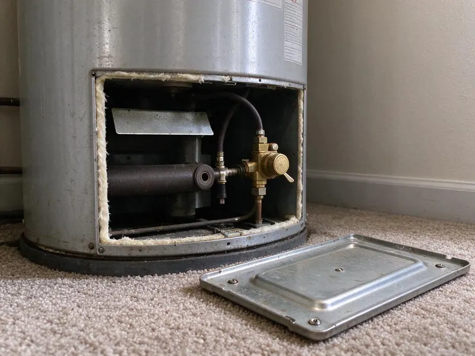
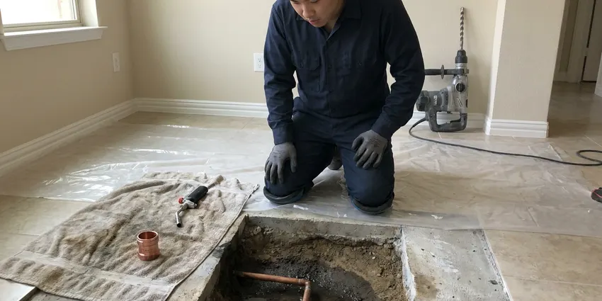

Trenchless Sewer Line Repair in Conroe, TX
Dealing with a damaged sewer line in Conroe, TX? DFJ Plumbing offers trenchless repair solutions that save your yard and your budget.
- Fast, Non-Invasive Repair
- No Major Excavation
- Long-Lasting Solutions
- Certified Texas Plumbers
Need Trenchless Sewer Line Repair in Conroe, TX?
Our team provides efficient and effective trenchless solutions for your home's plumbing.
Trusted Trenchless Sewer Line Repair in Conroe, TX
DFJ Plumbing provides advanced trenchless sewer line repair services across Conroe, TX. This innovative approach allows us to fix damaged sewer pipes with minimal digging, preserving your landscape and reducing repair time.
Our expertise includes:
- Diagnosing complex sewer line issues with advanced cameras.
- Executing pipe bursting for full sewer line replacement.
- Performing Cured-In-Place Pipe (CIPP) relining for damaged sections.

Additional Plumbing Repair Services in Conroe, TX
We offer expert plumbing repair services across Conroe, TX to fix leaks, restore flow, and keep your system running smoothly.


Customers
Why Choose DFJ Plumbing for Trenchless Sewer Line Repair in Conroe, TX?
Our expertise in trenchless technology provides a superior alternative for residents in Conroe, offering a cleaner, quicker, and often more cost-effective way to restore your sewer system.
- Minimal Digging, Trenchless methods require only small access points, preserving your yard, driveway, and landscaping.
- Cost-Effective, By reducing excavation and restoration work, trenchless repair can often be less expensive than traditional digging.
- Durable Fix, The new pipes or liners installed are often more resistant to common issues like root intrusion and corrosion.
Citywide Coverage
From historic districts to new developments, our team is equipped to provide efficient trenchless sewer solutions throughout Conroe. We're familiar with local infrastructure and can quickly respond to your needs.
Experienced Team
The DFJ Plumbing team brings years of dedicated experience to every trenchless sewer line repair project. We ensure all work is performed to the highest standards, providing reliable and long-lasting results for your home.
Safety-First Approach
Safety is paramount in all our trenchless sewer line repair operations. We strictly adhere to all Texas plumbing codes and industry best practices, ensuring a secure and compliant repair process.
Trusted Certified Conroe Plumbing Services Professionals
At DFJ Plumbing, we take pride in providing licensed, certified plumbing services throughout Conroe, TX. Backed by recognized industry credentials, our experienced plumbers combine technical skill with genuine customer care. Whether it is repair, installation, or maintenance, we follow strict safety and quality standards to deliver long-lasting results you can trust.
Call Us Now PHCC Plumbing Contractor Recognition
PHCC Plumbing Contractor Recognition Better Business Bureau (BBB) Accreditation
Better Business Bureau (BBB) Accreditation Angi Certified Pro
Angi Certified Pro ISO 9001 Quality Management Certification
ISO 9001 Quality Management CertificationReliable Trenchless Sewer Line Repair Services in Conroe, TX
Pipe Bursting Sewer Line Replacement in Conroe
Pipe bursting is a trenchless method used for full sewer line replacement. It involves pulling a new pipe through the old one, simultaneously breaking apart the existing pipe. This creates a seamless, durable replacement, often using high-density polyethylene (HDPE) pipe, which is highly resistant to corrosion and root intrusion, common problems in Conroe's older homes. This method is ideal when the existing pipe is severely damaged or collapsed.

Cured-In-Place Pipe (CIPP) Relining in Conroe, TX
CIPP relining creates a new pipe within an existing damaged sewer line. A resin-saturated felt tube is inserted into the old pipe and then inflated, curing in place to form a smooth, durable, and watertight liner. This technique is excellent for repairing cracks, leaks, and minor offsets without needing to dig up the entire line. It’s a fast and effective solution for many common sewer problems faced by Texas homeowners.
Sewer Camera Inspections for Trenchless Repair in Conroe
Before any trenchless repair, a detailed sewer camera inspection is crucial. Our high-definition cameras navigate your sewer lines, providing real-time video feedback of the pipe's interior. This allows us to accurately diagnose the problem, identify its exact location, and determine the most appropriate trenchless method, whether it's pipe bursting or CIPP. This diagnostic step ensures a precise and effective repair in Conroe.
Causes of Sewer Line Damage in Conroe, TX
Sewer lines in Conroe, TX can suffer damage from several factors, including shifting Texas clay soils, which can cause pipes to crack or misalign. Tree root intrusion is another major culprit, as roots seek out moisture in pipes and grow, causing blockages and structural damage. Age and corrosion, especially in older cast iron or clay pipes, also contribute to deterioration. Our trenchless solutions address these common issues effectively.
Emergency Trenchless Sewer Repair in Conroe
Sewer line emergencies, such as major backups or collapses, require immediate attention. DFJ Plumbing offers emergency trenchless sewer repair services in Conroe to quickly address critical issues. While trenchless methods generally take more planning, in certain emergency situations, they can be deployed to mitigate damage and restore function faster than traditional excavation, especially when maintaining landscape integrity is paramount.
Trenchless vs. Traditional Sewer Repair Costs in Conroe, TX
While the upfront cost of trenchless sewer repair in Conroe, TX can sometimes be comparable or slightly higher than traditional methods, the overall cost savings are often significant. This is because trenchless repairs eliminate the need for extensive excavation, backfilling, and landscape restoration. Homeowners save money on repairing driveways, patios, and gardens, making it a more economical choice in the long run for many.
Perma-Liner and NuFlow Trenchless Technologies in Conroe
DFJ Plumbing utilizes industry-leading trenchless technologies from trusted brands like Perma-Liner and NuFlow. These systems are known for their durability, effectiveness, and adherence to plumbing standards. Using these advanced materials and equipment ensures that your trenchless sewer line repair in Conroe is not only minimally invasive but also provides a high-quality, long-lasting solution, backed by manufacturer warranties.

Commercial Trenchless Sewer Line Repair in Conroe, TX
For businesses in Conroe, TX, minimizing disruption is key. Our commercial trenchless sewer line repair services offer a discreet and efficient way to address sewer issues without impacting business operations or customer access. Whether it's a restaurant, office building, or retail space, we provide robust trenchless solutions that restore sewer functionality quickly, ensuring your business can continue operating smoothly.
Trenchless Sewer Line Repair Near Me in Conroe, TX
When you search for "trenchless sewer line repair near me" in Conroe, TX, DFJ Plumbing is your local expert. We are strategically located to provide rapid response and efficient service to all residents, ensuring that your sewer line issues are addressed promptly.
Our team understands the unique plumbing infrastructure and environmental factors in Conroe, allowing us to deliver tailored trenchless sewer repair solutions right in your neighborhood. Trust the local professionals who know your area best for reliable service near me.
DFJ Plumbing at a Glance
- Fully licensed plumbing team covering Conroe, TX
- 24/7 emergency service with same-day scheduling
- Clear written estimates, no hidden fees
- 4.9-star rated by 812+ Texas customers
Conroe Map
Conroe Information
- Population
- 108,248
- Area codes
- 936/713/281
- Service area
- Conroe and communities within 40 miles
- Nearby
- The Woodlands, Spring, Atascocita, Houston
Given the expansive clay soils and aging infrastructure in many Conroe, TX neighborhoods, trenchless sewer line repair offers a durable solution that minimizes landscape disruption and adapts well to ground movement.
Expert Services
Trust our professionals for reliable DFJ Plumbing solutions in Conroe, TX.
Our Specialized Plumbing Services in Conroe, TX
At DFJ Plumbing, we provide a complete range of plumbing services across Conroe, TX. From leak detection to full system installations, our team ensures fast, precise, and affordable service for both residential and commercial properties. Explore our core services below:


How Our Trenchless Sewer Line Repair Process Works in Conroe, TX
Here’s a step-by-step look at how DFJ Plumbing performs trenchless sewer line repair in Conroe, ensuring a lasting solution.
Request a Quote
Contact DFJ Plumbing at (737) 405-5978 to schedule an initial consultation. We'll discuss your sewer line issues and arrange for a professional inspection at your Conroe property.
Sewer Line Inspection
We use advanced sewer camera technology to conduct a thorough inspection of your pipes. This allows us to accurately diagnose the problem and determine if trenchless repair is the best solution.
Prepare Access Points
Only one or two small access points are dug, depending on the chosen trenchless method (pipe bursting or CIPP lining). This minimizes disruption to your landscape and foundation.
Frequently Asked Questions About Trenchless Sewer Line Repair in Conroe
The cost for trenchless sewer line repair in Conroe, TX can range from $80 to $250 per foot, depending on the method (pipe bursting or CIPP), pipe diameter, and complexity of the job. For a typical 50-foot residential line, you might expect to pay between $4,000 and $12,500. This estimate generally includes labor, materials, and equipment.
Common signs include recurring drain backups, foul odors coming from drains, gurgling noises from toilets or drains, lush patches of grass in your yard (indicating a leak), or sudden drops in your water pressure. If you notice any of these in your Conroe home, it's time for a professional inspection.
The primary advantages include minimal disruption to your property, faster completion times, and often a more durable and longer-lasting repair due to the quality of new materials like HDPE or epoxy liners. You save on landscaping and restoration costs, which can be substantial in Conroe.
For pipe bursting, we typically use High-Density Polyethylene (HDPE) pipes, known for their strength, flexibility, and resistance to corrosion and roots. For CIPP relining, a felt liner saturated with epoxy resin (such as from Perma-Liner or NuFlow) is used to create a new, seamless pipe within the old one.
Most trenchless sewer line repairs can be completed in one to three days, significantly faster than traditional excavation methods which can take a week or more. The exact timeline depends on the length of the pipe, the severity of the damage, and the specific trenchless technique used.
Texas's expansive clay soils are prone to shifting with changes in moisture, which can put significant stress on underground pipes, leading to cracks, breaks, and misalignments. Trenchless methods, especially pipe bursting with flexible HDPE pipes, are highly effective in mitigating future damage caused by soil movement.
Yes, trenchless sewer line repairs generally require permits from the local Conroe building and plumbing departments. DFJ Plumbing handles all necessary permitting processes to ensure your repair is fully compliant with all local codes and regulations in Texas.
Trenchless sewer line repair is a complex process requiring specialized equipment, expertise, and adherence to strict safety and plumbing codes. It is definitely not a DIY project. Always hire a licensed and experienced plumbing professional like DFJ Plumbing for trenchless repairs to ensure the job is done correctly and safely.
What People Are Saying About Our Plumbing Experts?

Emily R.
I called DFJ Plumbing for plumbing repair, and the technician was fast, polite, and thorough. They explained the problem clearly and fixed it the same day. I will definitely hire them again. Highly recommended!
Plumbing Repair · Spring, TX
Sofia M.
Two new toilets installed in one visit, no mess left behind, and the tech even adjusted a faucet he noticed was dripping. Fair pricing and really friendly.
Toilet Installation · Pasadena, TX
Mark T.
When our office needed drain cleaning, DFJ Plumbing provided quick, reliable service. The plumber arrived on time and made sure every drain flowed perfectly before leaving. Very satisfied.
Drain Cleaning · Baytown, TX
James P.
Our commercial plumbing system had a leak under the sink, and DFJ Plumbing handled it professionally. The plumbers arrived quickly and restored everything without disruption to our customers.
Commercial Plumbing · Atascocita, TX
Daniel K.
A pipe burst at 11 pm and they actually answered. The plumber showed up within the hour, shut everything down, and had us back to normal the next morning. Could not ask for more.
Emergency Plumbing · Atascocita, TXRobert G.
The trenchless sewer replacement saved our front yard. They walked us through the camera inspection footage first so we knew exactly what we were paying for.
Sewer Line Replacement · Pasadena, TX